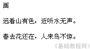
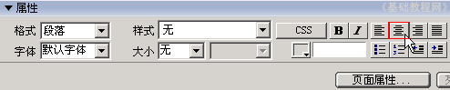
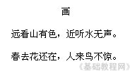
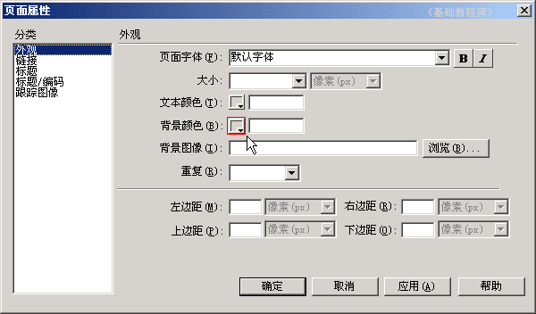
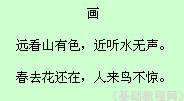

Dreamweaver 8 基础入门教程
三、对齐和背景 返回
接着上一课，这一节我们来学习文字的对齐方式，以及背景色的设置方法，下面我们通过一个练习来学习；
1、启动Dreamweaver
1）点击“开始－所有程序－Macromedia－Macromedia Dreamweaver 8”，；
2）在中间的“创建新项目”中点第一个 HTML，打开一个空白文档，把标题改为“对齐”；
3）以 duiqi 为文件名，保存一下文件，保存位置在我们建的站点文件夹里；
2、输入内容
1）输下面的三行内容，输完一行后，按一下回车键；

2）拖黑选中三行内容，在下边属性面板第一排中，找到“居中”按钮点一下，

这样文字就自动排到中间的位置，一般标题放在居中的位置，保存一下文件；

3、背景色
1）默认的背景色是白色，我们可以改成其他颜色；
2）在下边的属性面板中，找到“页面属性..”按钮，点一下出来一个面板；

3）找到中间的“背景颜色”按钮点一下，在出来的调色板中，选择一个淡绿色，点“确定”背景色就设好了；
调色板的右上角有三个按钮，第一个是返回“默认颜色”，第二个是“拾取颜色”，右边的三角按钮是一个菜单；
保存一下文件，点“预览”按钮，看一下网页的效果；

插入背景图片的方法，在背景颜色按钮下面的背景图片中选择一幅图片；
本节学习了文字对齐和背景色的设置方法，如果你成功地理解并完成了练习，请继续学习下一课内容；
本教程由86团学校TeliuTe制作|著作权所有
基础教程网：http://teliute.org/
美丽的校园……
转载和引用本站内容，请保留版权信息和本站链接。